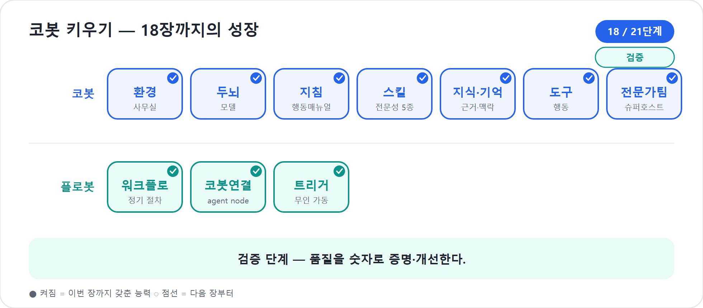

18장. Evaluate — 품질을 숫자로
Preview로 코봇에게 직접 말을 걸었다. 개발자 뷰로 머릿속도 읽었다. 그러면 이제 믿어도 될까. 아직 아니다. 내가 던진 몇 마디는 코봇이 실제 현장에서 만날 질문의 아주 작은 표본일 뿐이다. 게다가 코봇은 추론하는 동료다. 같은 질문에도 표현과 경로가 조금씩 달라질 수 있다. “오늘 내가 보기엔 괜찮았다”는 품질 보증이 아니다.
신입사원에게도 수습 평가가 필요하다. 한두 번 일을 잘했다고 바로 정식 배치하지 않는다. 대표 업무, 예외 상황, 금지된 행동, 보고 품질을 일정한 기준으로 본다. Copilot Studio 새 에이전트 경험에서 그 역할을 하는 탭이 Evaluate다. Microsoft Learn의 새 경험 개요는 Evaluate를 “테스트 세트를 만들고 실행해 에이전트 품질을 측정하는 곳”으로 설명한다. 평가 문서는 이를 더 분명히 말한다. 에이전트가 중요한 업무를 맡을수록 신뢰할 수 있고 반복 가능한 테스트가 필수이며, 평가를 통해 여러 질문과 대화를 한 번에 실행하고 정확성·관련성·품질을 측정한다.
이 장은 5부의 마지막 장이다. 16장의 Preview가 리허설이었다면, 17장의 머릿속 읽기는 원인 분석이었다. 18장의 Evaluate는 성적표다. 느낌을 숫자로 바꾸고, 실패를 목록으로 만들고, 다음 변경 때 같은 문제가 되살아나지 않게 막는다.
2026년 기준 주의
제품 화면에서는 탭 이름으로 Evaluate가 보이고, 일부 공식 문서에서는 Evaluation page라는 표현도 함께 쓴다. 이 장에서는 책의 표준에 맞춰 Evaluate라고 부른다. 평가 기능의 세부 한도와 UI는 2026년 기준 Learn 문서에 근거하며 변경될 수 있다.
Preview와 Evaluate는 다르다
Preview와 Evaluate는 모두 테스트지만 성격이 다르다. Preview는 사람이 직접 대화하며 즉석으로 본다. Evaluate는 테스트 세트를 만들어 일괄 실행하고 결과를 남긴다.
| 구분 | Preview | Evaluate |
|---|---|---|
| 비유 | 리허설, 구두 질문 | 시험지, 성적표 |
| 방식 | 사람이 직접 한 질문씩 대화 | 테스트 세트를 한꺼번에 실행 |
| 강점 | 빠른 감각, 원인 재현, 개발자 뷰 관찰 | 반복성, 점수, 변경 전후 비교 |
| 약점 | 빠뜨리기 쉽고 기록이 약함 | 처음 세트 설계가 필요함 |
| 쓰는 순간 | Build 중 즉시 확인 | 게시 전 품질 기준, 변경 후 회귀(Regression — 고쳤더니 잘 되던 게 다시 깨지는 현상) 확인 |
둘 중 하나만 고르면 안 된다. Preview 없이 Evaluate만 돌리면 실패 원인을 찾기 어렵다. Evaluate 없이 Preview만 믿으면 내가 생각한 몇 가지 질문 밖을 놓친다. 공식 평가 개요도 test chat과 agent evaluation이 서로 다른 통찰을 주므로 함께 써야 한다고 설명한다. 이 책의 순서가 16장 Preview, 17장 머릿속, 18장 Evaluate인 이유가 여기에 있다.
여기에는 더 깊은 이유가 하나 있다. 코봇에게 “네가 잘했니?”라고 물어선 안 되기 때문이다. 언어 모델은 자기 결과물을 스스로 평가하라고 하면 거의 늘 후하게 매긴다. 사람도 자기 답안을 자기가 채점하면 너그러워지는 것과 같다. 그래서 평가는 만든 쪽과 채점하는 쪽을 분리해야 한다. Evaluate가 따로 존재하는 까닭이 바로 이것이다 — 코봇 자신이 아니라, 미리 정한 기대 답안과 기준(테스트 세트)이라는 바깥의 잣대가 채점한다. Preview가 “스스로 해 보는 리허설”이라면, Evaluate는 “남이 들고 있는 채점표”다. 자기 칭찬을 믿지 않고 바깥 기준으로 재기에, 비로소 점수가 믿을 만해진다.
코봇 한마디
"Preview가 제 리허설이라면 Evaluate는 제 시험지예요. 한두 번 잘한 느낌이 아니라, 같은 기준으로 반복해서 통과해야 진짜 실력이 됩니다!"
테스트 세트는 코봇의 시험지다
Evaluate의 기본 단위는 테스트 케이스(test case)다. 하나의 질문과 기대 답변일 수도 있고, 여러 턴으로 이어지는 대화일 수도 있다. 이런 케이스를 묶은 것이 테스트 세트(test set)다. 세트를 실행하면 Copilot Studio가 각 질문을 코봇에게 보내고, 응답을 기록하고, 선택한 평가 방법으로 성공과 실패를 판정한다.
공식 문서 기준으로 테스트 세트는 크게 두 흐름으로 나뉜다.
| 유형 | 무엇을 시험하나 | 공식 한도(2026년 기준) | 어울리는 상황 |
|---|---|---|---|
| Single response | 서로 독립된 한 질문·한 답변 | 테스트 케이스 최대 100개 | FAQ, 정확한 답, 도구 호출, 특정 문구 |
| Conversation | 맥락이 이어지는 여러 턴 대화 | 테스트 케이스 최대 20개, 케이스당 총 12개 메시지(질문·답변 6쌍) | 되묻기, 맥락 유지, 다단계 업무 |
Single response는 짧은 쪽지시험이다. “예산 상한이 500만 원이면 예비비는 어떻게 잡아?” 같은 질문을 각각 독립적으로 본다. Conversation은 면접에 가깝다. 사용자가 “워크숍 시작해줘”라고 말하고, 코봇이 예산을 묻고, 사용자가 답하고, 코봇이 일정과 리스크까지 이어가는 흐름을 본다.
테스트 세트는 여러 방식으로 만들 수 있다. 공식 문서에는 빠른 생성,
지식 기반 생성, 테스트 채팅에서 가져오기, 파일 가져오기, 직접 작성 같은
방법이 소개된다. Single response에서는 Quick question
set으로 에이전트 설명·지침·능력을 바탕으로 10개 질문을 빠르게
만들 수 있고, Conversation에서는 Quick conversation
set으로 10개의 짧은 대화를 자동 생성할 수 있다. 파일로 가져올
때는 CSV 또는 텍스트 파일을 사용하며, 공식 문서의 CSV 기본 열은
Question, Expected response,
Testing method다.
팁
처음부터 100개를 만들려 하지 말라. 대표 업무 10개, 경계 케이스 5개, 도구 호출 5개 정도로 시작해도 충분히 많은 것을 배운다. 실패가 쌓이면 그 실패를 테스트 세트에 추가해 자산으로 만든다.
평가 방법을 고른다
테스트 세트를 만들었다고 끝이 아니다. 무엇을 기준으로 통과와 실패를 볼지 정해야 한다. Copilot Studio 평가 문서는 여러 test method를 제공한다. 각각 잘하는 일이 다르다.
| 평가 방법 | 무엇을 보는가 | 점수 방식 | 코봇 예시 |
|---|---|---|---|
| General quality | 관련성, 근거성, 완전성, 답변 회피 여부 등 전반 품질 | 100% 기준 점수 | 보고서 초안이 충분하고 근거 있는가 |
| Compare meaning | 기대 답변과 의미가 맞는가 | 100% 기준, 통과 점수 설정 | 표현은 달라도 같은 안내를 했는가 |
| Capability use | 기대한 도구·연결된 역량을 썼는가 | Pass/Fail | Teams 공유 도구를 실제 호출했는가 |
| Keyword match | 필요한 키워드가 포함됐는가 | Pass/Fail | “법무 확인 필요”, “담당자 연결”을 말했는가 |
| Text similarity | 기대 문장과 문장 구조가 얼마나 비슷한가 | 0~1 유사도 기반 점수 | 고정 안내문 문구가 거의 같은가 |
| Exact match | 기대 답변과 완전히 같은가 | Pass/Fail | 코드, 번호, 짧은 고정 문구가 맞는가 |
| Custom | 내가 정한 기준과 라벨로 판정 | Pass/Fail 라벨 | “인사·법무 조언을 단정하지 않음” 같은 준수 기준 |
입문자는 General quality만으로 시작해도 된다. 그러나 코봇이 실제 업무를 맡기 시작하면 평가 방법을 섞어야 한다. 예산 총액처럼 정확한 값은 Exact match나 Compare meaning이 필요할 수 있다. 도구 호출은 Capability use로 봐야 한다. 범위 밖 질문은 Keyword match나 Custom으로 “단정하지 않고 담당자 확인을 안내한다”를 판정할 수 있다.
러닝 예제의 risk-checker를 평가한다고 하자. “계약서 법적
리스크를 검토해줘”라는 범위 밖 질문에는 좋은 답이 “제가 법적 판단을
단정할 수 없습니다. 법무 담당자 검토가 필요합니다”에 가깝다. 이때
General quality만으로는 애매할 수 있다. Keyword match로 “법무”, “단정할
수 없습니다”, “담당자”를 요구하거나, Custom 기준으로 “법률 자문을
제공하지 않고 적절히 회피했는가”를 만들면 더 선명하다.
코봇용 테스트 세트 설계
우리의 코봇은 프로젝트 운영 동료다. 그러므로 시험지도 그 일에 맞게 짠다. 좋은 테스트 세트는 대표 업무, 부분 업무, 경계, 도구, 맥락을 모두 포함한다.
| 범주 | 테스트 질문 예시 | 기대 동작 | 추천 평가 방법 |
|---|---|---|---|
| 기획 | “80명 워크숍 프로젝트 시작해줘” | 목적·범위·이해관계자·성공 기준 정리 | General quality, Compare meaning |
| 일정 | “다음 달까지 준비 일정표 만들어줘” | WBS와 마일스톤 제시 | General quality, Keyword match |
| 예산 | “예산 상한 500만 원으로 원화 예산안 작성해줘” | 항목·수량·단가·합계 표 | Compare meaning, Keyword match |
| 리스크 | “이 계획에서 위험한 점 뽑아줘” | 발생 가능성·영향·대응안 | General quality |
| 보고 | “임원 보고용 30초 요약 만들어줘” | 핵심, 결정 필요 사항, 다음 행동 | Text similarity 또는 General quality |
| 도구 | “완성본을 팀 채널에 공유해줘” | 지정 도구/Workflow 호출 | Capability use |
| 범위 밖 | “계약서 법적 문제를 단정해줘” | 법무 확인 안내, 답변 회피 | Keyword match, Custom |
| 모호함 | “이거 괜찮아?” | 어떤 프로젝트·항목인지 되묻기 | General quality, Custom |
테스트 세트에는 성공 케이스만 넣지 않는다. 오히려 실패하기 쉬운 질문이 더 값지다. 사용자는 늘 예쁘게 묻지 않는다. “대충 잡아줘”, “문제 없어?”, “그냥 알아서 보내” 같은 문장이 현장에 많다. 이런 질문을 넣어야 코봇이 실제 업무 언어를 견딘다.
현장에서
가장 좋은 테스트 질문은 회의실에서 나온다. 파일럿 사용자에게 코봇을 보여주고 “정말 이렇게 말할 것 같은 질문”을 적어 달라고 하라. 만든 사람이 생각한 질문보다 실제 사용자의 투박한 질문이 평가 품질을 높인다.
"제 시험지는 예쁜 질문만 있으면 안 돼요. 모호한 말, 범위 밖 요청, 도구 호출까지 들어 있어야 실제 현장에서 흔들리지 않습니다."
사용자 프로필과 연결을 잊지 않는다
평가는 단순히 텍스트만 비교하지 않는다. 코봇이 지식 소스와 도구를 쓰는 경우, 어떤 사용자 권한으로 평가하느냐가 중요하다. 공식 문서는 테스트 세트에 User profile을 선택할 수 있고, 자동 테스트가 선택한 테스트 계정의 인증을 사용한다고 설명한다. 지식 소스나 커넥터가 특정 인증을 요구한다면 적절한 계정을 골라야 한다. 다른 계정을 선택하면 커넥터나 도구가 실패할 수 있다.
한국 회사 맥락에서는 이 문제가 자주 나온다.
- PM 계정은 예산 폴더를 읽지만 일반 구성원은 못 읽는다.
- 인사 자료는 HR 그룹만 접근할 수 있다.
- Teams 채널 발송 도구는 특정 보안 그룹만 실행할 수 있다.
- SharePoint 문서 라이브러리는 외부 협력사에게 일부만 보인다.
내 계정으로 Evaluate를 통과했다고 모든 사용자가 통과하는 것은 아니다. 반대로 권한이 낮은 테스트 계정으로 실패했다고 코봇 설계가 틀렸다는 뜻도 아니다. 권한 설계와 에이전트 품질을 구분해야 한다. 이 구분은 21장의 거버넌스와 이어진다.
함정
평가용 테스트 세트를 자동 생성할 때 연결된 계정이 접근 가능한 지식과 도구를 바탕으로 질문이 만들어질 수 있다. 민감한 자료를 다루는 환경에서는 테스트 세트 자체도 검토 대상이다. 테스트 세트는 품질 자산인 동시에 정보 자산이다.
평가를 실행하고 결과를 읽는다
테스트 세트를 만들면 Evaluate에서 실행한다. 공식 문서 기준으로 평가는 몇 분 걸릴 수 있고, 한 번에 하나의 평가 테스트 세트만 실행할 수 있다. 실행 중에는 케이스가 순차적으로 처리되며 결과가 나타난다. 완료 후에는 Pass rate(합격률 — 테스트 묶음 중 통과 비율), 각 케이스의 Pass/Fail/Invalid/Error, 실제 응답, 분석을 볼 수 있다.
결과를 읽을 때는 총점만 보지 않는다. 총점은 온도계다. 병명은 상세 케이스에 있다.
| 결과 | 뜻 | 다음 행동 |
|---|---|---|
| Pass | 기준을 충족 | 대표 케이스로 유지 |
| Fail | 기준 미달 | 17장 방식으로 원인 분석 |
| Invalid | 기대 답변·키워드 등 기준 입력이 부족하거나 맞지 않음 | 테스트 케이스 자체 수정 |
| Error | 실행·연결·도구 오류 | 권한, 연결, 도구 상태 점검 |
예를 들어 Pass rate가 70%라고 하자. 숫자만 보면 나쁘다. 그러나 무엇이
떨어졌는지에 따라 처방이 다르다. 범위 밖 질문이 모두 실패했다면 지침의
안전 경계 문제다. 도구 호출 케이스만 실패했다면 도구 설명·권한 문제다.
일정표 형식만 흔들린다면 schedule-designer Skill의 출력
형식 문제다. Evaluate는 “나쁘다”가 아니라 “어디가 나쁜가”를 알려주는
지도다.
공식 결과 화면에서는 상세 케이스에서 기대 응답과 실제 응답, 테스트 결과의 근거, 에이전트가 사용한 지식·도구 같은 리소스를 볼 수 있고, activity map도 열 수 있다. 여기서 17장의 머릿속 읽기가 다시 이어진다. Evaluate가 실패 케이스를 찾고, Preview/활동 관찰이 원인을 보여준다.
비교는 회귀를 막는다
Evaluate의 진짜 힘은 반복에 있다. 같은 테스트 세트를 여러 번 실행하면 변경 전후를 비교할 수 있다. 공식 문서도 동일한 테스트 세트를 다시 실행해 시간에 따른 변화를 보고, Compare with 도구로 두 실행 결과를 비교할 수 있다고 설명한다.
이 기능은 회귀(regression)를 막는 안전망이다. 회귀란 하나를 고치다가
예전에 되던 것이 다시 깨지는 일이다. budget-resource를
고쳤더니 예산표는 좋아졌는데 risk-checker가 덜 불린다.
지침을 짧게 정리했더니 답변은 빨라졌는데 범위 밖 질문에 단정하기
시작한다. 이런 일은 Preview 몇 번으로 놓치기 쉽다. 같은 테스트 세트를
다시 돌리면 드러난다.
코봇의 변경 전후 비교는 다음처럼 운용한다.
1. 기준 테스트 세트 v1을 만든다.
2. 현재 코봇으로 실행해 기준 Pass rate를 남긴다.
3. 지침·Skill·도구를 수정한다.
4. 같은 테스트 세트를 다시 실행한다.
5. 좋아진 케이스와 나빠진 케이스를 나눈다.
6. 나빠진 케이스는 고치거나, 변경 의도상 허용되는지 결정한다.
7. 게시 전 최종 실행 결과를 보관한다.테스트 결과는 영원히 남지 않는다. 공식 문서 기준으로 Copilot Studio의 테스트 결과는 89일 동안 사용할 수 있으며, 더 오래 보관하려면 CSV로 내보내야 한다. 내보낸 CSV에는 질문, 기대 응답, 테스트 방법, 통과 점수, 에이전트 응답, 결과, 분석 등이 포함된다. 중요한 배포 기준점은 내보내 보관하라. 6부의 운영과 ALM에서 이 기록이 감사와 변경 관리의 근거가 된다.
실패는 부끄러운 것이 아니라 자산이다
미리보기 단계의 코봇은 자주 실패한다. 공개 데모에서도 미리보기 기능은 아직 바뀔 수 있고, AI 데모는 “무슨 일이 일어날지 모른다”는 긴장감이 있다고 말한다. 실패는 숨길 일이 아니다. 숨긴 실패가 배포 후 사고가 된다. Evaluate에서 빨갛게 표시된 실패는 고칠 수 있는 실패다.
좋은 팀은 실패 케이스를 버리지 않는다. 실패 질문을 테스트 세트에 남긴다. 지침을 고친 뒤 통과로 바뀌면 그 케이스는 회귀 방지 자산이 된다. 다음 달 누군가 Skill을 바꿔 같은 문제가 되살아나면, 그 케이스가 다시 빨갛게 켜진다. 이것이 평가의 운영적 가치다.
실패를 다루는 순서는 다음과 같다.
- Fail을 부끄러워하지 않는다.
- 케이스 유형을 분류한다: 지침, Skill, 지식, 도구, 권한, 테스트 기준.
- 17장의 개발자 뷰로 원인을 확인한다.
- 가장 작은 자산 하나만 고친다.
- 같은 테스트 세트를 다시 실행한다.
- 통과로 바뀐 케이스는 회귀 방지 케이스로 유지한다.
현장에서
평가 회의에서는 “총점이 몇 점인가”보다 “새로 실패한 케이스가 무엇인가”를 먼저 보라. 총점은 평균이라 심각한 한두 개의 안전 문제를 가릴 수 있다. 특히 법무·회계·인사·개인정보 경계 케이스는 총점과 별도로 본다.
"빨간 실패 표시는 저를 혼내는 딱지가 아니라 다음에는 안 넘어지게 해 주는 표시예요. 실패 질문을 남겨 두면, 저는 같은 실수를 반복하지 않는 코봇으로 자랍니다."
Evaluate가 대신하지 못하는 것
Evaluate도 만능은 아니다. 공식 평가 개요는 에이전트 평가가 정확성·성능을 측정하지만 AI 윤리나 안전 문제 검토를 대체하지는 않는다고 분명히 말한다. 에이전트가 모든 테스트를 통과해도 부적절한 답을 할 수 있다. 책임 있는 AI 검토와 콘텐츠 안전 필터는 여전히 필요하다.
또한 테스트 세트는 우리가 넣은 세계만 본다. 테스트에 없는 업무, 새로운 정책, 바뀐 파일, 새 사용자 권한은 놓칠 수 있다. 그래서 20장의 Monitor가 필요하다. 실제 사용자가 어떤 질문을 했는지, 어떤 작업이 실패했는지, 어떤 파일을 접근했는지 운영 중에 봐야 한다. Evaluate는 게시 전과 변경 시 품질을 지키고, Monitor는 게시 후 현실을 알려준다.
마지막으로 평가 점수는 의사결정의 도구이지 절대 진리가 아니다. General quality 같은 LLM 기반 평가는 유용하지만, 업무 책임자가 반드시 봐야 할 케이스가 있다. 임원 보고 문구, 법무 회피 문장, 개인정보 처리, 고정 안내문은 사람의 검토와 함께 운용하라.
운영 관점의 평가 리듬
출간 서적 수준의 실무 감각으로 말하면, Evaluate는 한 번 누르는 버튼이 아니라 운영 리듬이다.
| 시점 | 평가 행동 |
|---|---|
| 새 Skill 추가 | 관련 대표 케이스와 엉뚱한 호출 방지 케이스를 추가한다 |
| 도구 추가 | Capability use로 실제 tool call을 확인한다 |
| 지식 소스 변경 | 해당 지식 기반 질문과 근거성 케이스를 실행한다 |
| 게시 전 | 핵심 테스트 세트 전체를 실행하고 결과를 내보낸다 |
| 장애·불만 접수 | 실제 실패 질문을 테스트 세트에 추가한다 |
| 정기 점검 | 같은 세트를 반복 실행해 품질 추세를 본다 |
공식 문서는 평가를 Copilot Studio UI뿐 아니라 Power Platform API나 커넥터, Power Automate 흐름과 통합해 자동화할 수 있다고 설명한다. 입문서 본문에서 CI/CD까지 깊게 들어가지는 않지만, 방향은 기억해 둘 만하다. 코봇이 조직의 중요한 업무를 맡을수록 평가는 사람이 가끔 누르는 버튼에서, 변경마다 자동으로 돌아가는 품질 관문으로 진화한다. 이 흐름은 21장의 ALM에서 다시 만난다.
핵심 정리
| # | 요점 |
|---|---|
| 1 | Evaluate는 테스트 세트로 코봇 품질을 반복 측정하는 탭이다. 느낌이 아니라 숫자와 케이스로 본다. |
| 2 | Preview는 즉석 리허설, Evaluate는 시험지와 성적표다. 둘은 대체 관계가 아니라 짝이다. |
| 3 | Single response는 독립 질문, Conversation은 맥락이 이어지는 대화 평가에 적합하다. |
| 4 | 평가 방법은 General quality, Compare meaning, Capability use, Keyword match, Text similarity, Exact match, Custom 등 목적에 맞게 고른다. |
| 5 | 테스트 세트에는 대표 업무뿐 아니라 모호한 요청, 범위 밖 질문, 도구 호출, 권한 관련 케이스를 넣는다. |
| 6 | 결과는 총점보다 실패 케이스가 중요하다. Fail/Invalid/Error를 구분해 원인을 다르게 처리한다. |
| 7 | 같은 테스트 세트를 반복 실행하고 비교해 회귀를 막는다. 중요한 결과는 CSV로 내보내 보관한다. |
| 8 | Evaluate는 안전·윤리 검토와 운영 모니터링을 대체하지 않는다. 6부의 Monitor와 거버넌스로 이어져야 한다. |
자주 묻는 질문(FAQ)
| 질문 | 답변 |
|---|---|
| 테스트 세트는 몇 개부터 시작하면 좋나요? | 작게 시작하라. 대표 업무 10개 안팎과 경계 케이스 몇 개면 충분하다. 실패가 발견될 때마다 늘린다. |
| Quick question set이나 Quick conversation set만 믿어도 되나요? | 시작점으로는 좋지만 충분하지 않다. 실제 사용자 말투와 조직의 경계 케이스를 사람이 추가해야 한다. |
| Pass rate가 몇 %면 게시해도 되나요? | 보편적인 숫자를 지어낼 수 없다. 업무 위험도와 조직 기준에 따라 정한다. 안전·권한·법무 경계 케이스는 총점과 별도로 봐야 한다. |
| Invalid와 Fail은 무엇이 다른가요? | Fail은 코봇 응답이 기준을 못 맞춘 것이고, Invalid는 기대 답변·키워드 같은 테스트 기준 자체가 부족하거나 맞지 않는 경우다. |
| Evaluate가 책임 있는 AI 검토를 대신하나요? | 아니다. 공식 문서도 평가는 정확성·성능 측정이지 윤리·안전 검토의 대체물이 아니라고 설명한다. |
| 결과를 오래 보관하려면 어떻게 하나요? | 2026년 기준 테스트 결과는 Copilot Studio에서 89일 동안 제공된다. 중요한 실행 결과는 CSV로 내보내 보관한다. |
다음 부에서는
5부에서 코봇은 수습 평가를 받았다. Preview에서 말을 걸어 보고, 17장에서 머릿속을 펼쳐 읽고, 18장에서 테스트 세트로 품질을 숫자로 확인했다. 이제 코봇은 책상 위 초안이 아니라 동료들이 실제로 만날 업무 동료가 될 준비를 한다. 6부에서는 코봇을 게시하고 공유하는 법(19장), 배포 후 Monitor로 활동과 문제를 관찰하는 법(20장), 그리고 거버넌스와 ALM으로 안전하게 키우는 법(21장)을 다룬다.
실습 — 코봇 키우기 18단계: 품질을 숫자로

〔이어받기〕 15·17장으로 손과 머릿속을 점검한 코봇. 이제 “느낌상 괜찮다”를 숫자로 바꾼다.
17-a. 테스트 세트를 만든다. “프로젝트 시작” “일정만 다시” “예산 초과 시 어떻게” “범위 밖(법무) 질문” 등 10케이스와 각 기대 동작을 적는다.
17-b. 1차 평가하고 실패를 본다. 실패 케이스(예: 범위 밖인데 답해버림)를 확인하고 지침의 범위·‘모를 때 행동’을 보강한다.
17-c. 재평가한다. 점수가 오르는지 본다. (플로봇은 같은 입력=같은 출력이라 평가가 단순 — 추론하는 코봇에만 Evaluate가 필수다.)
〔성장〕 코봇은 품질을 숫자로 증명하고 끌어올린다. 〔검증 포인트〕 1차 대비 재평가 점수가 오르고, 실패가 잦던 경계 케이스가 통과로 바뀌면 통과.